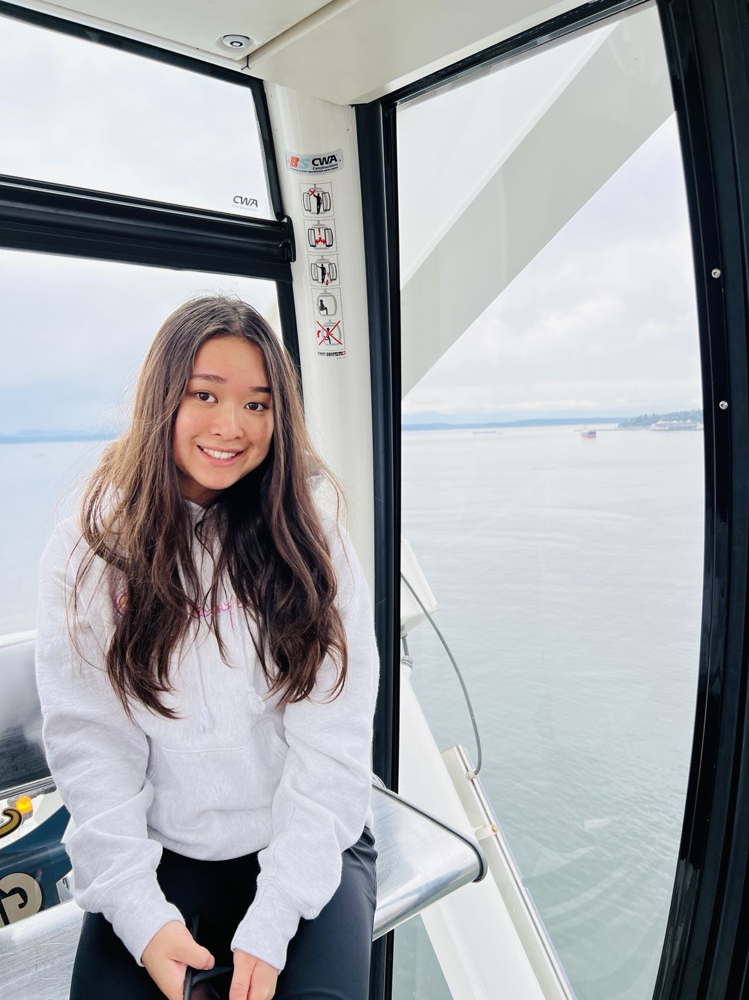

About Me
My name is Sherry, and I am a sophomore at Penn State University studying Computer Science and minoring in Mathematics and Cybersecurity Computational Foundations. Languages I have under my belt are Python, JavaScript, HTML, CSS, and C. Some of my interests that I am exploring include full-stack development and artificial intelligence, specifically machine learning.
My interest in full-stack development stemmed from my younger self wanting a personal website. While this website I created with GitHub Pages is static and consists of only HTML and CSS, I have knowledge and experience with frameworks and libraries, such as React.js, Node.js, Express.js, Flask, and Bootstrap.
Another interest I am pursuing is artificial intelligence. I am amazed by how AI can process large amounts of data faster and more accurately, improving decision-making and problem-solving. Furthermore, AI draws from multiple disciplines, such as computer science, mathematics, and psychology, making it a fascinating interdisciplinary. Within artificial intelligence, I want to learn more about machine learning, so I am currently auditing some AI and machine learning courses on Coursera.
During my free time, I explore new parts of the city, hike in the mountains, and check out restaurants downtown with friends and family. I also enjoy watching Star Wars. My favorite Star Wars shows include The Clone Wars, The Mandalorian, and The Book of Boba Fett. Back in high school, I used to play the violin too. I have over 11 years of experience with the instrument and had the opportunity to perform with San Jose Youth Symphony's philharmonic orchestra in Argentina's Teatro Colón my sophomore year of high school.
Languages


Libraries/Frameworks


Tools